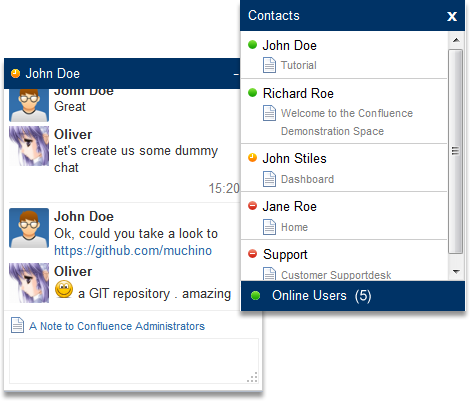

The confluence chat plugin brings confluence users more together. This built-in confluence chat for realtime collaboration gives confluence users the posibility to chat. In addition it shows the browsed page of the chat partner (could be disabled in the configuration) and the current online state.
Promote the direct communication and use the the macro which will produce a link to the configured user and shows the current chat status of the this user. On click, the chat starts.
If you like to restrict the ability to chat for certain user , you could configured a group restriction.
With a small Javascrip API, cou could retrieve for example the current chat status of an given username.
Features
- Chat between confluence users
- "Where is my chat partner" Info
- State: Online, Offline, Away, DND
- Group restriction
- Macro to create a chat user link
- Smiley support
- Link detection
- "New message" notification
- Autoaway
Releases
1.2.0
Because of a restructuring the old messages are deleted. It may appear warnings in the log file.
- the height of the textarea is now dynamic (like gtalk or facebook)
- play sound when new message arrives (could be gloabl disabled by an administrator or by an user for his self )
- alphabetical sorting of the users
- ability to delete the chat data. The data could be deleted selectively by an admin or in the new dopmenu of the chatbox
1.1.1
- Add configuration to hide the configuration in edit mode.
- Add configuration to enable javascript debug mode.
- At the "Where I am Info" Url parser, I had forgotten the contextPath
1.1.0
New Features
- Add a chat user link macro
- Add Configuration of chat restriction (All or by groups)
- Add possibility to switch off the "where I am Info"
- New small Javascript API, to start chats from outside "ConfluenceChatAPI"
- Added version number to js
Improvements & Bugfixes
- Change window behaviour (close oldest, if there is not enough space - similar to gtalk)
- Improved request permission
- Improved the js
- Fixed reported bugs
1.0.1
This release fixes the important contextPath issue. If confluence is running under a certain contextPath, like "/confluence" the chat doesn't work. Additional fixes: the chat doesn't worked)
- Stop chat heartbeat when ajax url's are for more than three times unavaible (if chat is disabled or uninstalled by an admin)
- encapsulated the javascript of the chat to avoid sideeffects
- Usability: Stop chatbox flashing, after a chatbox mouseover or click into the chatbox
- Suppressing deactivation of dynamic task list macro input elements, while an Ajax request
1.0
initial release
Comments
comments powered by Disqus